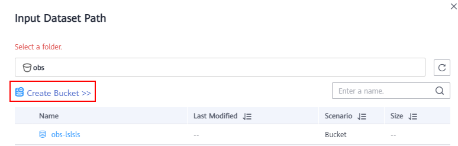

When creating a project, select a training data path. This section describes how to quickly create an OBS bucket and folder when you select the training data path.
- On the page for creating an ExeML project, click on the right of Input Dataset Path. The Input Dataset Path dialog box is displayed.
- Click Create Bucket. The Create Bucket page is displayed. For details about how to create a bucket, see Creating a Bucket in the Object Storage Service Console Operation Guide.
Figure 1 Creating an OBS bucket

- Select the bucket, and click Create Folder. In the dialog box that is displayed, enter the folder name and click OK.
- The name cannot contain the following special characters: \/:*?"<>|
- The name cannot start or end with a period (.) or slash (/).
- The absolute path of a folder cannot exceed 1,023 characters.
- Any single slash (/) separates and creates multiple levels of folders at once.